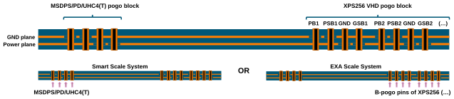
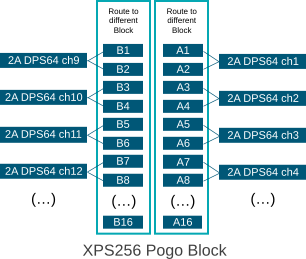

DPS128 and UHC4 migration to XPS256
The XPS256 card can replace the DPS128 / DPS64 card. Some rules regarding the configuration of the pogo cable assemblies and the DUT board design are to be followed. It is also possible to design new DUT boards that are optimized for XPS256 but are backwards compatible with DPS128.
This topic describes the migration related to the design of the DUT board. For corresponding information in context of programming the XPS256 card, refer to XPS256 programming - DPS128 and UHC4 migration to XPS256 in the test head cards reference.
Compatible pogo cable assemblies (DPS128 / DPS64)
The XPS256 card can be connected to the DUT board via HD type pogo blocks and via VHD pogo blocks. The VHD pogo blocks double the channel density for optimized DUT interface use.
- XPS256 HD pogo cable assemblies are compatible with DPS128 / DPS64 HD pogo cable assemblies E8023PA (8 HD pogo blocks) and E8023PH (4 HD pogo blocks).
- XPS256 VHD
pogo cable assemblies are compatible with DPS128 / DPS64 VHD
pogo cable assemblies E8023PB (2 VHD pogo
blocks) and E8023PK (4 VHD pogo
blocks).
The VHD type pogo cable assemblies double the channel density for optimized DUT interface use and provide a full backward compatible design between XPS256 and DPS128 / DPS64.
Incompatible pogo cable assemblies
- Several pogo cable assemblies for DPS128 / DPS64 use internal ganging of
multiple channels to mimic the pogo block layout or current force
capabilities of legacy test head cards such as DPS32 or MS‑DPS. For
more information, refer to DPS128 / DPS64 pogo cable assemblies and pogo pin assignments.
There are no internally ganged pogo cable assemblies available for XPS256. The pogo cable assemblies using internal ganging or MS‑DPS type pogo blocks are therefore not compatible to the XPS256 pogo cable assemblies and require a new design of the DUT board using only the compatible HD and VHD type pogo cable assemblies.
- UHC4 / UHC4T channels can be replaced by ganged XPS256 channels but require a specific layout of the pogo pads as shown in UHC4 / UHC4T DUT board layout. The migration from UHC4 / UHC4T cards to XPS256 requires therefore also a new design of the DUT board.
Mapping of pogo cable assemblies (DPS128 / DPS64)
The following table lists the different types of DPS64 and DPS128 pogo cable assemblies, and shows also what should be done to assure the DUT board compatibility with XPS256.
| DPS128 / DPS64 pogo cable assembly | DUT board connection | XPS256 pogo cable assembly | |||||||||
|---|---|---|---|---|---|---|---|---|---|---|---|
| Pogo cable assembly | Primary use | Pogo blocks | Ganged channels | Description | Pogo cable assembly | Pogo blocks | Ganged channels | ||||
| E8023PA | DPS128 | 8 | none | Standard | → | Direct | → | EK751HDA | 16 | none | |
| E8023PH | DPS64 | 4 | none | Standard | → | ||||||
| E8023PC | DPS128 | 4 | 2 | DPS32 compatible | → | Two channels ganged on DUT board | → | EK751VHDA | 8 | none | |
| E8023PD | DPS64 | 2 | 2 | DPS32 compatible | → | ||||||
| E8023PE | DPS128 | 8 | 2 | MS‑DPS compatible | → | Two channels ganged on DUT board | For MS‑DPS pogo location use B-pogo section of XPS256 for highest compatibility | → | EK751VHDA | 8 | none |
| E8023PG | DPS64 | 4 | 2 | MS‑DPS compatible | → | ||||||
| E8023PF |
DPS64 |
2 | 4 | MS‑DPS compatible | → | Four channels ganged on DUT board | |||||
| E8023PB | DPS64 | 2 | none | XPS256 VHD compatible | ← | Direct | Enable "backwards compatibility" | ← | EK751VHDA | 8 | none |
| E8023PK | DPS128 | 4 | none | XPS256 VHD compatible | ← | ||||||
In the table above, the different types of DPS128 / DPS64 pogo cable assemblies are listed, and it is shown what should be done to assure the DUT board compatibility with XPS256:
- E8023PA and E8023PH:
These cables can be directly mapped to XPS256 HD type pogo cable assemblies.
- E8023PC and E8023PD:
These cables were designed to allow for replacing DPS32 channels with DPS128 or DPS64. In these cables two channels have been ganged together to allow for driving two ampere out of each force pogo pin. Internal ganging is not available in the XPS256 cable assemblies and therefore it must be realized on the DUT board. More details are shown in the next section.
- MS‑DPS compatible E8023PE, E8023PG and E8023PF:
A similar procedure should be followed for these pogo cable assemblies, which have been designed for replacing MS‑DPS channels with DPS128 / DPS64 channels.
-
E8023PB and E8023PK:
These two pogo cable assemblies are newly designed VHD cables for DPS128 / DPS64 are fully compatible with XPS256 VHD pogo cable assemblies.
Design example for DPS64
Although the DPS64 pogo blocks and the XPS256 pogo blocks are installed in different V93000 test systems, it is a basic requirement for this solution that the pogo blocks are installed at different positions of the DUT interface. The DUT board thus can connect either to the DPS64 pogo blocks or to XPS256 pogo blocks.
Layout:

The assigned pogo pins for DPS64 will be connected to the same power plane as the assigned XPS256 pogo pins.
Channel assignment:
The DPS128 E8023PD pogo cable assembly uses HD type pogo blocks and internally gangs two DPS128 channels to one channel on pogo block level. The XPS256 EK751VHDA pogo cable assembly uses VHD type pogo
blocks without internal ganging. Note
The assignment of for example "2 A DPS64 ch1" to "A1/A2 of XPS256" (graphic on the right) is just a recommendation but can be freely chosen by the user. The VHD type pogo block of XPS256 covers two logical boards and provides therefore two groups of channels that are named A1 ... A16 and B1 ... B16 in the graphic on the right. Do not cross connect channels from group A and B as you may run out of ganging groups across logical boards. |
 |
Ganging considerations
With DPS128 / DPS64 and UHC4 / UHC4T, the ganged channels must be consecutive. This rule applies also if channels from different pogo blocks are ganged. For example, the last channel from pogo block A must be ganged with the first channel of pogo block B.
With regard to this rule, XPS256 is fully compatible, but allows also flexible ganging, which means that channels can be assigned to a ganging group even if they are not consecutive. This could simplify the layout of the DUT board.
The maximum number of ganging groups must be considered for flexible ganging of XPS256.
For more information, refer to XPS256 ganged in the test head cards reference.
VHD pogo pad and via design
The higher density of the XPS256 pogo pins is not affecting the possibility to use the same type of vias both for XPS256 and DPS128 / DPS64.
Due to the higher density of pogo pins and traces on the DUT bopard, the VHD pogo block of XPS256 VHD pogo cable assemblies (and also DPS128 / DPS64 VHD pogo cable assemblies) may require to observe product-specific rules for designing pogo pads and pogo vias: An optimized (but more complex) via design may simplify routing of the signal traces for the higher density of pogo pads.
For more information, refer to XPS256 VHD pogo pad and via design.
Capacitor configuration
XPS256 can work with the same capacitor configuration as DPS128 / DPS64 and UHC4 / UHC4T:
- An XPS256 channel in standard regulation mode is always stable.
- The cap‑less operation is supported.
- For the fast regulation mode, a minimum of 10 μF (per channel) to a maximum of 1 mF (per channel) is required for a stable operation.
- Optimum recommended value is 100 μF (per channel).
- The capacitor type selection may be based on ideal configuration for the DUT.
- Capacitors can be ceramic or tantalum or polymer with low ESR.
- There is no need to have a particular ratio between the usage of tantalum or ceramic capacitors for stability. For this reason, a capacitor configuration as required for UHC4 / UHC4 is not needed.
Power budget of XPS256
Unlike legacy similar cards, XPS256 does not require distributing a power budget across the active pins.
Nevertheless, the available power of an XPS256 card limits the maximum current for the 256 channel high-current variant XPS256 (EK751HC) in some cases as can be seen in XPS256 voltage and current capability specifications.
Voltage and current capabilities (DPS128 - XPS256)
Considering the whole card, XPS256 is generally extending the capabilities of DPS128-HC and DPS64. Below 2 V, XPS256 can deliver all the 256 A. For higher voltages it still provides more power than DPS128-HC and DPS64.
The diagrams below show the continuous voltage and current capabilities per channel. The original version of the diagrams is available in DPS128 specifications and XPS256 specifications.
| DPS128-HC | XPS256 |

|

|
The following table compares the capabilities of DPS128-HC and XPS256.
| DPS128-HC | XPS2561) | ||
|---|---|---|---|
| Maximum source / sink current per card |
66 A / 58 A @ 2.5V |
176 A / 176 A @ 2.5V |
|
| Power domains | 2 | none | |
| Maximum current @ 2.5 V ... | 1.0 A / 0.879 A | 1.0 A / -1.0 A | |
| … channels simultaneously | 66 | 176 | |
| Maximum current @ 2.5 V ... | 0.480 A / 0.411 A | 0.8 A / 0.9 A | |
| … channels simultaneously | 128 | 256 | |
| Maximum current @ 4.0 V ... | 0.346 A / 0.405 A | 0.6 A / 0.9 A | |
| … channels simultaneously | 128 | 256 | |
| Maximum current @ 7.0 V ... | 0.209 A / 0.394 A | 0.4 A / 0.6 A | |
| … channels simultaneously | 128 | 256 | |
Functional changes
- Introduced in SmarTest 7.10.1 / 8.4.3